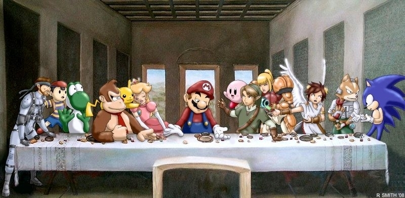

Bien entendu, nous ne pouvons pas faire un article sur la pop-culture nippone sans aborder l'industrie des jeux-vidéos, qui est une partie importante de la “japan touch”. C'est la première expression de la culture populaire japonaise à être exportée à grande échelle dans le monde entier. Ce qui va provoquer un changement de dogme, car contrairement à son passé, lorsque le Japon importait de la culture étrangère, il deviendra un pays exportateur et son influence ne cessera de grandir dans toutes les formes de divertissements ou presque.Cette forme de divertissement a émergé avec Space Invaders en 1978. Ce jeu vidéo était d’abord jouable en salles d’arcade qui étaient prises d’assaut par les jeunes Japonais. Grâce à la révolution des consoles vidéo, comme la Atari 2600 qui arrivera quasiment en même temps, on pouvait ensuite y jouer chez soi. La tendance se poursuivra avec l'apparition de nouvelles consoles, comme Nintendo ou Sega, et de grandes franchises telles que Super Mario Bros, Sonic ou The Legend of Zelda ont vu le jour. Un autre jeu deviendra très populaire au milieu des années 1990 : Pokémon. Son succès l’a ensuite vu se diversifier en développant un univers manga qui sera porté en dessin-animé, en long-métrage et dans de nombreux produits dérivés. Aujourd'hui, l'industrie du jeu vidéo est devenue la plus importante du monde, en combinant toujours plus de réalisme visuel, des univers de plus en plus denses, des musiques et des intrigues complexes.Le jeu vidéo au Japon est une industrie majeure. On fait communément correspondre le développement de cette industrie au Japon à l'âge d'or des jeux vidéo en général.
Des compagnies comme Nintendo, Sega, Sony Computer Entertainment ainsi que Taito, Namco, Capcom, Square Enix, Konami, NEC et SNK figurent parmi les grands noms qui ont marqué le secteur. Le jeu vidéo au Japon est connu pour ses catalogues issues de grand éditeurs, qui ont tous concouru sur les marchés des consoles de jeux vidéo et des salles d'arcade à divers point.Nintendo, un ancien vendeur de carte hanafuda, prends de l'importance dans les années 1980 avec la sortie de sa console de jeu vidéo Famicom, qui devient un hit majeur, connu sous le nom de Nintendo Entertainment System ou "NES" à l’international. Sony, déjà l'un des plus grands fabricants d'électronique au monde, est entré sur le marché en 1994 avec la PlayStation, l'une des premières consoles de salon à proposer des graphismes 3D, s'affirmant comme un éditeur majeur dans du marché. Shigeru Miyamoto reste internationalement reconnu comme un « père du jeu vidéo » et est à ce jour le seul développeur de jeux à recevoir la plus haute distinction civile japonaise pour les artistes, le 文化功労者 bunka kōrōsha ou Personne de Mérite Culturel. La culture d'arcade est une influence majeure chez les jeunes Japonais, Akihabara étant un lien majeur de la soi-disant culture otaku au Japon, qui possède un fort lien avec les jeux vidéo. Le jeu de rôle japonais est un genre de jeu issu du Japon mais qui reste populaire tant au niveau national qu'international, avec des titres comme Final Fantasy et Dragon Quest se vendant à des millions d'exemplaires. Le pays compte environ 67,6 millions de joueurs en 2018.